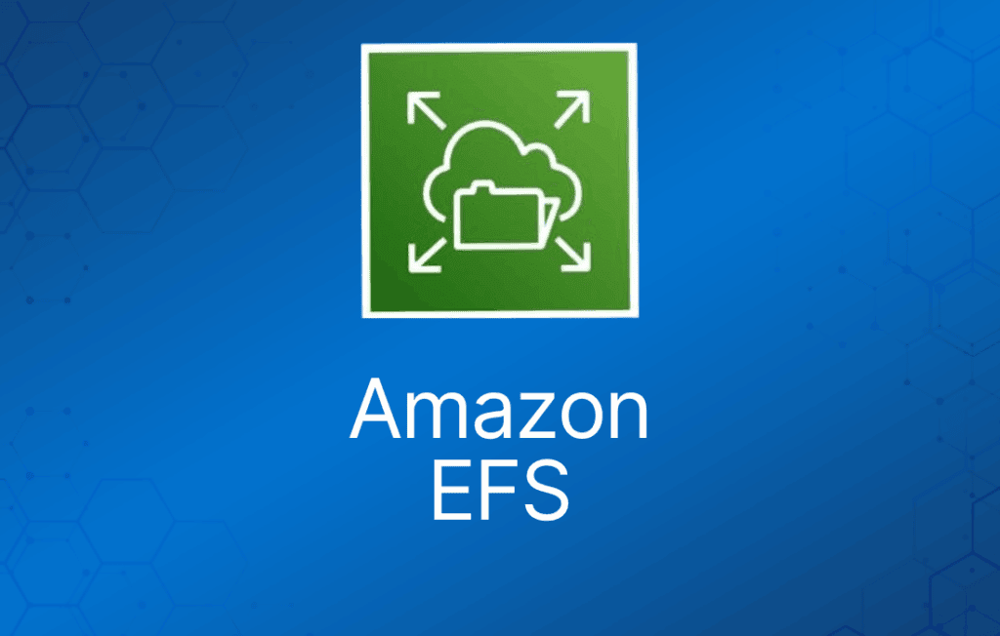
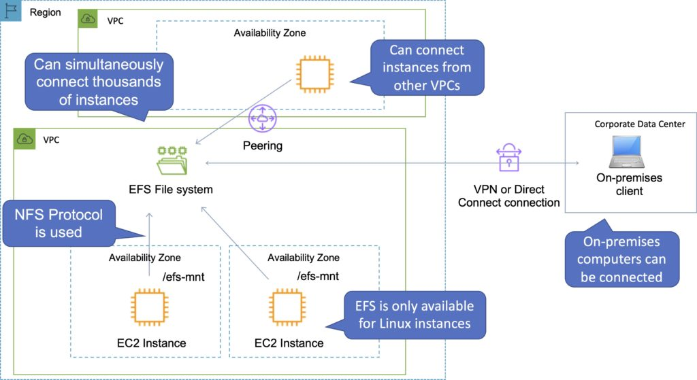

Amazon EFS 是在云中托管 Network File System (NFS) 文件系统的全托管服务。
它是 NFS 文件共享的一种实现，通过 NFS 协议访问。
它提供弹性存储容量，按实际使用量付费（与 Amazon EBS 按预置容量付费不同）。
你可以在一个或多个 AZ 中配置挂载点（mount point）。
只有在使用 AWS Direct Connect 或 VPN 连接时，才能从本地系统挂载 AWS EFS 文件系统。
典型使用场景包括大数据与分析、媒体处理工作流、内容管理、Web 服务、用户主目录（home directory）等。
采用按使用量付费模式，无需预先预置。
AWS EFS 可扩展至 PB 级。
AWS EFS 是弹性的，随着数据的增加和删除自动伸缩。
你可以从多个 AZ 并发连接多达数千个 Amazon EC2 实例。
文件系统可以被其所在区域内的所有 AZ 并发访问。
下图展示了挂载 EFS 文件系统的各种方式：

可以通过 AWS Direct Connect 或 AWS VPN 实现从本地服务器访问 AWS EFS 文件系统。
你可以在本地 Linux 服务器上使用标准的 Linux mount 命令，通过 NFS 协议挂载 AWS EFS 文件系统。
连接实例所在的 Amazon VPC 必须启用 DNS hostname。
EFS 提供文件系统接口和文件系统访问语义（例如强一致性和文件锁）。
数据存储在一个区域内的多个 AZ 中。
写后读一致性（read-after-write consistency）。
需要创建挂载目标（mount target）并选择要包含的 AZ（建议包含所有 AZ）。
实例可以位于 Elastic Load Balancer (ELB) 之后。
Amazon EFS 兼容所有基于 Linux 的 Amazon EC2 AMI。
使用 EFS-to-EFS Backup 方案，你可以对 Amazon EFS 文件系统安排自动增量备份。
下表对比了 EFS 与 EBS 的存储特性：
| Amazon EFS | Amazon EBS Provisioned IOPS | |
| 可用性与持久性 | 数据跨多个 AZ 冗余存储 | 数据在单个 AZ 内冗余存储 |
| 访问 | 来自多个 AZ 的多达数千个 Amazon EC2 实例可以并发连接到一个文件系统 | 单个 AZ 中的单个 Amazon EC2 实例连接到卷 |
| 使用场景 | 大数据与分析、媒体处理与工作流、内容管理、Web 服务和用户主目录 | 启动卷、事务型和 NoSQL 数据库、数据仓库与 ETL |
备份与生命周期管理
自动备份默认启用，使用 AWS Backup。
生命周期管理会将一段时间内未被访问的文件移动到 EFS Infrequent Access 存储类别。
Amazon EFS 性能
有两种性能模式：
- "General Purpose"（通用型）性能模式适合大多数文件系统。
- "Max I/O" 性能模式针对几十、几百甚至数千个 EC2 实例同时访问文件系统的应用进行了优化。
Amazon EFS 设计上支持突发（burst），允许在一段时间内达到高吞吐量水平。
有两种吞吐量模式：
- "Bursting"（突发）——吞吐量随文件系统大小扩展。
- "Provisioned"（预置）——吞吐量固定为指定的数值。
Amazon EFS 文件系统分布在数量不受限制的存储服务器上，使文件系统能够弹性扩展至 PB 级，并允许 Amazon EC2 实例大规模并行访问你的数据。
这种分布式数据存储设计意味着多线程应用以及从多个 Amazon EC2 实例并发访问数据的应用可以达到非常高的总吞吐量和 IOPS。
下表对比了 AWS 文件存储（EFS）和块存储（EBS）的高层性能与存储特性：
| Amazon EFS | Amazon EBS Provisioned IOPS | |
| 单次操作延迟 | 低且稳定的延迟 | 最低且稳定的延迟 |
| 吞吐量规模 | 每秒 10+ GB | 最高每秒 2 GB |
Amazon EFS 加密
EFS 提供静态数据（at rest）和传输中数据（in transit）的加密能力。
加密密钥由 AWS Key Management Service (KMS) 管理。
传输中加密：
- 传输中数据加密使用 Transport Layer Security (TLS) 1.2 加密客户端与 EFS 文件系统之间发送的数据。
- 挂载文件系统时启用传输中加密。
静态加密：
- 在 EFS 控制台或使用 AWS CLI、SDK 启用静态加密。
- 静态加密必须在创建文件系统时启用。
- 静态加密的数据在写入时透明加密，读取时透明解密。
静态数据加密和传输中数据加密可以一起配置，也可以分开配置。
Amazon EFS 访问控制
创建文件系统时，你会在 VPC 中创建称为"挂载目标"（mount target）的端点。
从 EC2 实例挂载时，你在 mount 命令中提供的文件系统 DNS 名称会解析为挂载目标的 IP 地址。
你可以使用 IAM（基于用户和基于资源的策略）控制谁可以管理你的文件系统。
你可以控制哪些 NFS 客户端可以访问你的文件系统（基于资源的策略）。
你可以使用符合 POSIX 的用户和组级权限控制对文件和目录的访问。
POSIX 权限允许你按用户和组限制来自主机的访问。
EFS Security Group 充当防火墙，你添加的规则定义流量流向。
监控与报告
Amazon EFS 控制台为你的文件系统显示以下监控信息：
- 当前计量大小。
- 挂载目标数量。
- 生命周期状态。
Amazon EFS 向 Amazon CloudWatch 报告指标。几个有用的指标：
- TotalIOBytes——使用每日 Sum 统计值来确定吞吐量。
- ClientConnections——使用每日 Sum 统计值跟踪来自 EC2 实例的连接数。
- BurstCreditBalance——监控突发积分余额。
日志与审计
Amazon EFS 与 AWS CloudTrail 集成。
CloudTrail 将 Amazon EFS 的所有 API 调用捕获为事件，包括来自 Amazon EFS 控制台的调用和代码对 Amazon EFS API 的调用。